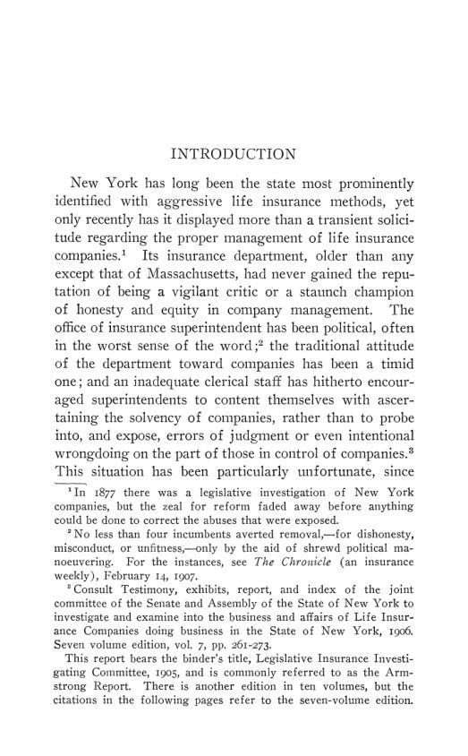

Price, 1909: a reforma do seguro de vida em Nova York
Leitura: 10 min
Em 1909, William H. Price examinou três anos de leis nascidas da investigação Armstrong: eleição de diretores pelos segurados, teto para comissões, limite ao crescimento e o fim dos dividendos diferidos.


Em junho de 1905, o relatório do comitê Frick sobre a administração da Equitable, uma das três grandes seguradoras de vida de Nova York, chamou a atenção do público para irregularidades que já eram suspeitadas no setor. Seguiu-se uma comissão legislativa chefiada pelo senador Armstrong, com Charles E. Hughes como advogado e Miles M. Dawson como atuário. Price descreve seu relatório como a investigação mais completa já feita sobre companhias de seguro de vida. A maior parte das emendas propostas foi aprovada em Albany em abril de 1906.
A monografia que ocupa o nº 4 do volume de 1909 é o balanço dessas leis. Price, vice-comissário do Bureau of Labor and Industrial Statistics de Wisconsin, escreveu de Madison, em dezembro de 1909. No prefácio, diz que mais de quatro anos de debate e quase três de experiência com as novas regras permitiam um estudo desinteressado, e que por isso evitou consultar qualquer pessoa envolvida com o negócio de seguros.
Por que Nova York?
O departamento de seguros de Nova York, diz Price, fiscalizava companhias que faziam quase metade do seguro de vida do país, incluindo as quatro maiores do mundo: New York Life, Mutual, Equitable e Metropolitan. O cargo de superintendente era político, a equipe era insuficiente e a fiscalização se limitava a verificar a solvência. Para medir o efeito sobre o segurado, Price compara o custo líquido, isto é, o prêmio menos o dividendo, de apólices equivalentes em quinze companhias. Em 1905, conclui, as de Nova York, com uma exceção duvidosa, cobravam mais caro pela proteção.
O que a investigação encontrou?
Segundo o resumo que Price faz do relatório Armstrong, as companhias da cidade de Nova York gastaram de forma extravagante na corrida por negócios novos, com comissões altas, apólices que caducavam logo e descontos irregulares a clientes. O custo de vender apólices novas era coberto com o excedente dos segurados antigos. Os dividendos eram reduzidos ainda por salários altos, por aplicações de baixo retorno em bancos ligados aos dirigentes e por gastos jurídicos e políticos. A lei de 1906 proibiu dirigentes de lucrar com as operações da companhia, vetou a compra de ações e exigiu exame oficial ao menos a cada três anos.
Os salários mostram o mecanismo. Na Mutual, um subcomitê fixava a remuneração da diretoria, e o salário do presidente subiu de US$ 30 mil em 1885 para US$ 150 mil em 1901, aumento que, segundo o relatório citado por Price, só era conhecido por outros dois homens. A nova lei passou a exigir voto formal da diretoria para qualquer salário de US$ 5 mil ou mais.
Os segurados passaram a eleger os diretores?
Nas mútuas, os diretores eram eleitos formalmente pelos segurados, mas os agentes recolhiam as procurações e as entregavam aos dirigentes, que assim se perpetuavam. A comissão buscou na Austrália o modelo do voto pelo correio, defendido havia anos por Dawson, e aprovou um meio-termo: voto pessoal, por correio ou por procuração temporária. A chapa da administração disputaria com qualquer outra apresentada por cem ou mais segurados. Price aponta a manutenção da procuração como o defeito mais sério da lei.
Como se limita o gasto de vender seguro?
A peça central é a nova regra de solvência, o método seleto e último. Recém-aprovados no exame médico, os segurados morrem menos nos primeiros anos de apólice do que indica a tábua usada para calcular o prêmio. A lei transformou essa folga em verba para despesas iniciais. Price a considera talvez a medida mais fundamental da legislação, porque dela dependem os limites de gasto, de excedente e de dividendos.
A seção 97 limitou o gasto com negócios novos à parcela do primeiro prêmio destinada a despesas mais o valor presente desses ganhos de mortalidade nos cinco primeiros anos. Proibiu bônus por volume de vendas e limitou as comissões de renovação a 7,5% por nove anos. Segundo Price, a facilidade com que os corretores trocavam de companhia havia elevado a comissão inicial de 10% para 50% ou mais; a Equitable pagava, antes de 1900, praticamente 75%.
A regra provocou a reação mais forte de todo o pacote. O presidente da New York Life, Kingsley, reagiu assim:
“legislação suntuária e socialista, cuja insensatez foi demonstrada há séculos” (“sumptuary and socialistic legislation, whose folly was demonstrated centuries ago”)
Os números do primeiro ano mostraram adaptação: o custo dos negócios novos ficou, em média, em 91% do permitido, e o gasto total em 66% do máximo legal. Em 1908, o governador Hughes vetou um projeto de compromisso; em 1909, sancionou outro, que estendeu as comissões de renovação de nove para catorze anos.
Pode uma lei proibir uma empresa de crescer?
A comissão Armstrong foi além do custo e limitou o volume. Nenhuma companhia poderia emitir mais de US$ 150 milhões em seguros novos por ano, e as menores teriam tetos de crescimento proporcionais ao tamanho, de 30% para as que tinham entre US$ 50 milhões e US$ 100 milhões em vigor até 15% para as que tinham entre US$ 600 milhões e US$ 1 bilhão. O argumento da comissão era direto:
“Nenhum propósito útil será atendido se elas ficarem maiores.” (“No useful purpose will be served by their becoming larger.”)
Price registra que o limite foi defendido nas audiências até por representantes das grandes companhias. Na prática, só pesou sobre a New York Life, que emitiu US$ 135,8 milhões em 1907. Para não estourar o teto, a empresa fechou filiais no exterior, dispensou os corretores de meio período e chegou a recusar temporariamente qualquer negócio novo. Para Price, com o gasto já limitado, o teto de volume era desnecessário.
Quanto excedente uma seguradora deve guardar?
A lei também limitou a reserva para contingências, o excedente não distribuído; por pedido dos atuários, o teto das maiores companhias subiu de 2% para 5% dos valores líquidos. Price considera o limite desnecessário e inseguro, e a crise de 1907 é seu exemplo: com os títulos registrados a preço de mercado, a queda das cotações ameaçou produzir insolvência técnica, embora os sinistros continuassem a ser pagos. A saída veio em 1909, com a autorização para registrar títulos pelo método da amortização.
Por que acabaram os dividendos diferidos?
Pouco antes de 1870, a Equitable lançou as tontinas, que acumulavam os dividendos e os repartiam só entre os sobreviventes que mantivessem a apólice; depois vieram as semitontinas, mais brandas. Price sustenta que a escolha do segurado era, em geral, guiada pelo agente: quando a Northwestern Mutual deixou a decisão ao segurado, só 768 de 29.223 escolheram o dividendo diferido em 1903. A Equitable pagava comissão inicial de 50% nessas apólices e de 25% nas de dividendo anual.
O fim veio sem protesto em 1906. A seção 83 passou a exigir dividendos anuais em todas as apólices participantes. Price atribui a queda à contabilidade frouxa revelada em 1905, que deixava os dirigentes praticamente sem prestar contas sobre esses fundos. O comitê Frick resumiu a diferença:
“A companhia de dividendo anual presta contas todos os anos.” (“The annual dividend company is held to accountability every year.”)
A medida que Price considera mais promissora é a menos intervencionista: a entrega ao departamento de seguros das tabelas de dividendos anuais por tipo de apólice, idade e data de emissão. Vários estados passaram a publicá-las, e agentes rivais passaram a comparar custos líquidos. Na Grã-Bretanha, essa publicação era exigida desde 1870.
Que balanço Price faz?
A conclusão tem nove pontos. A eleição por correio foi um passo certo, ainda imperfeito. O limite ao custo dos negócios novos era necessário; o limite ao gasto total, não. O teto de volume deveria ser revogado ou modificado, e o limite ao excedente era desnecessário e perigoso. Os dividendos anuais foram a consequência legítima de uma contabilidade sem sistema.
Na minha leitura
Na minha leitura, a força do estudo está na métrica. Price não mede as seguradoras por ativos, volume em vigor ou tamanho da sede, os indicadores da propaganda da época, mas pelo custo líquido para o segurado em apólices comparáveis. Com essa régua, a reforma deixa de ser uma discussão sobre dirigentes e vira uma pergunta verificável: quanto se paga pela mesma proteção. Por isso a publicação dos dividendos aparece como a peça mais eficaz do pacote; ela põe a mesma régua na mão do comprador e do concorrente.
O problema de fundo é de agência. Numa mútua, o gasto excessivo sai do excedente dos segurados, e não há lucro que sinalize quando o crescimento deixou de compensar. A lei de 1906 combinou duas respostas: tetos quantitativos, de comissão, volume e excedente, e regras de informação, como eleições, relatórios e dividendos anuais. O exame de Price mostra que um teto sobre os meios pode tornar redundante outro sobre o resultado, e que um teto mal calibrado pode criar o risco que pretendia evitar.
Glossário
- Prêmio nivelado
- valor fixo pago todo ano pelo segurado, calculado para cobrir um risco de morte que cresce com a idade.
- Reserva
- diferença entre o valor presente dos sinistros futuros e o dos prêmios futuros; é o passivo que a companhia precisa manter.
- Excedente (surplus)
- recursos que sobram depois de pagas as despesas e os sinistros e constituída a reserva; a maior parte volta ao segurado como dividendo.
- Apólice participante
- apólice que recebe parte do excedente da companhia na forma de dividendos.
- Custo líquido
- prêmio pago menos o dividendo recebido; a medida que Price usa para comparar as companhias.
- Mútua
- companhia sem acionistas, formalmente controlada pelos próprios segurados.
- Método seleto e último
- regra de cálculo da reserva que admite mortalidade menor nos primeiros anos após o exame médico.
- Comissão de renovação
- comissão paga ao agente sobre os prêmios dos anos seguintes ao primeiro.
- Tontina e semitontina
- apólices que acumulam os dividendos por um período e os repartem só entre os segurados que sobrevivem e mantêm a apólice.
- Twisting
- convencer um segurado a abandonar a apólice numa companhia para contratar outra numa concorrente.
- Método da amortização
- registro de títulos pelo preço de compra ajustado ano a ano até o valor de face no vencimento, em vez do preço de mercado.
Fontes
- [Life Insurance Reform in New York]: Preface (pp. v–vi). JSTOR · Internet Archive (PDF)
- [Life Insurance Reform in New York]: Explanatory Note (pp. vii–viii). JSTOR · Internet Archive (PDF)
- Life Insurance Reform in New York (pp. 1–95). JSTOR · Internet Archive (PDF)
- Sumário da edição no JSTOR: American Economic Association Quarterly, 3ª série, vol. 10, nº 4.
Documento em domínio público (EUA, publicado antes de 1931), via JSTOR Early Journal Content e Internet Archive. Resumo e comentário do autor deste site, sem afiliação com a American Economic Association. Encontrou um erro? Escreva: a correção é publicada no próprio texto, com data.
← Nº 101 · O Bulletin de setembro de 1909: censo, fumo e cidades Nº 103 · O Bulletin de dezembro de 1909: o aniversário, Newcomb e transportes →